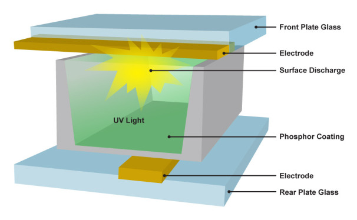

Digital Display

Plasma Display
How it works
A plasma display consists of millions of tiny cells filled with xenon and neon gas, held between two plates of glass. Lines of electrodes run beneath all the cells, and perpendicular lines of electrodes run above them, forming a basic grid. The plasma display controller charges the electrodes beneath and above the cell it needs to light up, and the current passing through the gas in the cell makes it glow. In many ways, it works just like a tiny fluorescent light. The controller lights up the cells each in turn, in a fraction of a second, too fast for the eye to see.
The light that the gas emits is actually in the ultraviolet spectrum and can’t be seen by the human eye, but each cell is coated with a colored phosphor--either red, green, or blue. Excited by the ultraviolet light, the phosphors emit visible light.
In short, a plasma display has pixels made up of smaller red, green, and blue subpixels that work like little fluorescent lights, with an electric charge exciting a gas and causing a phosphor to glow. And it all happens millions of times a second.